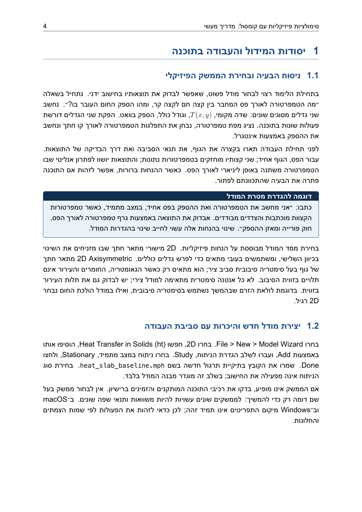
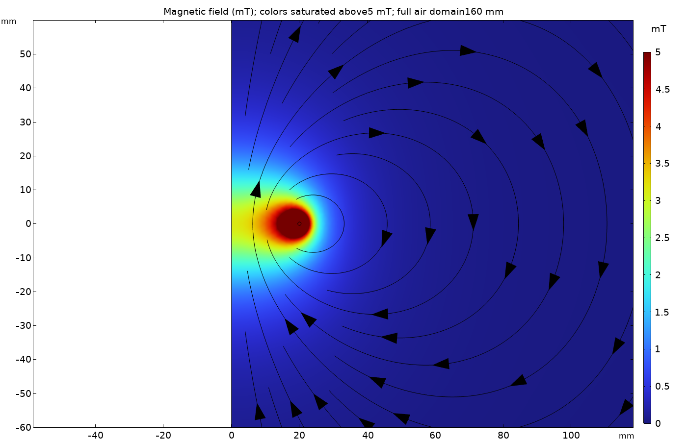

PDF · 52 עמודים
המדריך בעברית
כל פרקי ההדרכה, צילומי המסך, הדוגמאות, התרגילים ומילון המושגים. אפשר לקרוא בדפדפן או לשמור למחשב.
פתיחת החוברת שמירת PDF למחשבמדריך ללימוד עצמי · חוברת ותרגול להורדה
סימולציות פיזיקליות עם קומסול: מדריך מעשי לבניית מודלים, להגדרת חומרים ותנאי שפה ולבדיקת התוצאות.
החוברת מאת ד״ר נצח בלל מלווה את העבודה ב־COMSOL Multiphysics באמצעות הוראות מפורטות, צילומי מסך וחמש מעבדות. מתחילים בהולכת חום, ממשיכים לקבל וללולאת זרם מגנטית, ובהמשך מנתחים קירור בזמן וחימום ג׳אול.

המדריך מיועד לסטודנטים, למהנדסים ולחוקרים המתחילים לעבוד עם סימולציות פיזיקליות ב־COMSOL. נדרשת היכרות בסיסית עם פיזיקה, נגזרות, אינטגרלים ויחידות מידה. לא נדרש ניסיון קודם בתוכנה.
ה־PDF מאפשר להכיר את תהליך המידול גם לפני התקנת התוכנה. לבניית הדוגמאות ולפתיחת קובצי המודל נדרשות התקנת COMSOL ורישיון מתאים לממשקים הפיזיקליים שבשימוש. המודלים נבנו בגרסה 6.4.0.378; אין הבטחת תאימות לגרסאות קודמות.
בנו תחילה את המודל לפי ההוראות, חשבו מה צפוי להתקבל, ורק לאחר מכן השוו לקובץ הפתור. בכל מעבדה בודקים גם ערכים מספריים, יחידות ופתרון ייחוס — לצד מפת הצבעים.
תחילה מכירים את סביבת העבודה: Model Builder, פרמטרים ויחידות, גאומטריה, קבוצות בחירה, תכונות חומר, תנאי שפה ורשת חישוב. לאחר מכן מתרגלים את התהליך בחמש מעבדות:
הגדרת טמפרטורות בקצוות, בידוד תרמי ורשת חישוב. הפקת מפת טמפרטורה, גרף חתך והספק חום, והשוואה לחוק פורייה ולמאזן ההספק.
הגדרת חומר דיאלקטרי ופוטנציאל על הלוחות. חישוב השדה, המטען והאנרגיה, והפקת הקיבול בשתי דרכים כדי לבדוק יחידות ועובי מחוץ למישור.
בניית מודל בעל סימטריה צירית, הגדרת מקור זרם ועידון הרשת באזור החוט. חישוב השדה לאורך הציר והשוואה לחוק ביו־סבר.
הגדרת טמפרטורה התחלתית ומעבר חום בהסעה. בחירת זמני שמירת התוצאות וסבולת השגיאה, חישוב עקומת הקירור ובדיקת מאזן האנרגיה.
חיבור בין הולכה חשמלית למקור חום. חישוב הזרם, ההספק והטמפרטורה המרבית ובדיקת השפעת מתח ההפעלה.
פרקי הסיום עוסקים בהתכנסות הרשת, בבדיקות רגישות, באימות נומרי ובתיקוף פיזיקלי. הפרויקט המסכם מתרגל בחירת מתח לפס חימום תוך עמידה בדרישת טמפרטורה והתחשבות באי־ודאות בנתוני הקלט.

בדוגמה נבנית לולאה ברדיוס 20 מ״מ, עם חתך חוט שרדיוסו 0.5 מ״מ ומקור זרם שקול של 100 אמפר. המודל מחשב שדה מגנטוסטטי ממקור זרם נתון. הוא אינו מחשב את התנגדות החוט, את חימומו או את הזרם המותר בחוט ממשי.
השדה המחושב במרכז הוא כ־3.1356 mT, לעומת כ־3.1416 mT בפתרון הייחוס ללולאה דקה במרחב אינסופי. זהו פער של כ־0.19% במרכז בלבד. בחוברת נבדקת גם השפעת הרשת וגודל תחום האוויר, ומוסבר מדוע התאמה בנקודה אחת אינה מעידה על דיוק בכל המרחב.
להרחבה על יישומים מחקריים: מגנטיות יישומית ומיפוי שדה מגנטי.
PDF · 52 עמודים
כל פרקי ההדרכה, צילומי המסך, הדוגמאות, התרגילים ומילון המושגים. אפשר לקרוא בדפדפן או לשמור למחשב.
פתיחת החוברת שמירת PDF למחשבZIP · LaTeX
קובצי LaTeX והאיורים לעריכת החוברת ולקימפול באמצעות XeLaTeX. אין צורך ב־COMSOL לצורך קימפול המסמך.
הורדת קובצי המקורZIP · MPH / Java / CSV
קובצי MPH עם פתרונות שמורים, קוד Java, נתוני CSV ותיעוד הבדיקות. פתיחת המודלים דורשת COMSOL ורישיון מתאים.
הורדת המודלים והנתונים